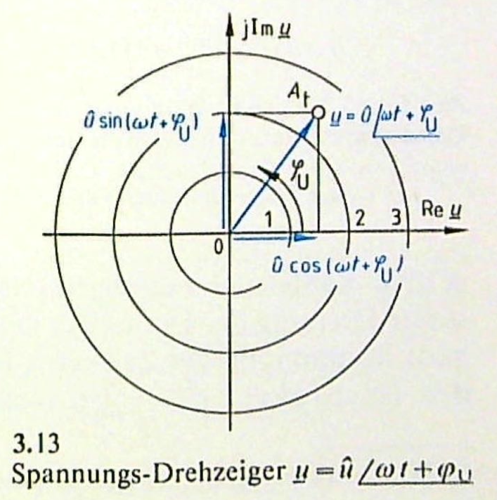

19 Komplexe Größen der Wechselstromtechnik
- Zeigerdiagramm
- Komplexe Drehzeiger
- Komplexer Festzeiger
- Komplexer Widerstand
- Komplexer Leitwert
19.1 Zeigerdiagramm

Entn. aus (Fricke und Vaske 1982)
Der Zeiger einer Sinusgröße ist wie die Sinusschwingung (physikalische Größe) durch 4 Kennwerte festgelegt:
- Die Art der Größe (z.B. Spannung, Strom, magn. Fluss) ist durch das Formelzeichen festgelegt.
- Der Betrag der Größe wird durch die Länge des Zeigers angegeben. Hier ist ein Maßstab notwendig.
- Die Phasenlage zwischen zwei Sinusgrößen kann durch die Phasenwinkel berücksichtigt werden.
- Die Frequenz ergibt sich aus der Kreisfrequenz und kann im Zeigerdiagramm nur als Momentaufnahme dargestellt werden.

Entn. aus (Fricke und Vaske 1982)
In der praktischen Sinustechnik wird oft mit dem Effektivwert gerechnet, daher ist es durchaus üblich, dass der Zeiger auch mal Effektivwerte angibt. Dies macht keinen Unterschied auf die Phasenlage.
19.2 Übungen Teil 1
19.2.1 Übung 4.1 (Beispiel 3.6)
Von 2 Spannungen mit den Effektivwerten \(U_1 = 30V\) und \(U_2 = 50V\) eilt \(\underline{U}_1\) um den Phasenwinkel \(\varphi_{21} = 60°\) gegenüber \(\underline{U}_2\) voraus. Wie groß sind die Effektivwerte der Gesamtspannungen und ihre Phasenwinkel gegenüber der Bezugsspannung \(\underline{U}_2\), wenn die Generatoren G mit den Spannungen \(\underline{U}_1\) und \(\underline{U}_2\) nach Bild 3.10a in Summenreihenschaltung oder nach Bild 3.10b in Gegenreihenschaltung liegen?

Entn. aus (Fricke und Vaske 1982)
Berechnung Summenspannung:
\[ U_s = \sqrt{U_1^2 + U_2^2 + 2 U_1 U_2 cos(\varphi)} = \sqrt{30^2V^2 + 50^2V^2 + 2\cdot 30V \cdot 50V cos(60°)} = 70V \]
Berechnung Phasenwinkel:
\[ \varphi_s = arctan \left( \frac{U_1 sin(\varphi) + U_2 sin(0°)}{U_1 cos(\varphi) + U_2 cos(0°)} \right) = arctan \left( \frac{30V sin(60°) + 50V sin(0°)}{30V cos(60°) + 50V cos(0°)} \right) = 21.79° \]
Berechnung Differenzenspannung:
\[ U_d = \sqrt{U_1^2 + U_2^2 - 2 U_1 U_2 cos(\varphi)} = \sqrt{30^2V^2 + 50^2V^2 - 2\cdot 30V \cdot 50V cos(60°)} = 43.59V \]
Berechnung Phasenwinkel:
\[ \varphi_s = arctan \left( \frac{-U_1 sin(\varphi) + U_2 sin(0°)}{-U_1 cos(\varphi) + U_2 cos(0°)} \right) = arctan \left( \frac{-30V sin(60°) + 50V sin(0°)}{-30V cos(60°) + 50V cos(0°)} \right) = -36.59° \]
19.3 Komplexer Drehzeiger
Überträgt man die Zeiger aus den Zeigerdiagrammen in die komplexe Ebene, dann kann man den Zeiger vollständig durch eine komplexe Zahl beschreiben. Dadurch wird das geometrische Zeigerzusammensatzen in eine reine Zahlenrechnung überführt.
Wendet man die komplexe Rechnung auf Zeigerdiagramme für Ströme, Spannungen, Leistungen, Widerstände und Leitwerte an, wird der Charakter dieser Größen nicht verändert. Sie sind weiterhin von der Zeit abhängig und schwingen. Man wechselt nur aus dem für die Rechnung umständlichen Zeitbereich in den Zeigerbereich über, in die Rechnung durch komplexe Zahlen einfacher ist.

Entn. aus (Fricke und Vaske 1982)
Ein Punkt in der Komplexen Ebene (in Polarkoordinaten) wird mit den Nullpunkt-Abstand \(\hat{u}\) (Scheitelwert der Sinusspannung), dem zur Zeit t=0 Winkel \(\varphi_u\) (Nullphasenwinkel) und der Winkelgeschwindigkeit \(\omega\) (Kreisfrequenz der Sinusspannung) beschrieben.
\[ \underline{u} = \hat{u} e^{j(\omega t + \varphi_u)} = \hat{u} e^{j\omega t} e^{j \varphi_u} = \hat{u} \angle(\omega t + \varphi_u) = \hat{u} \angle(\omega t) \angle \varphi_u \]
Der Zeitwert der Spannung u wird über den Imaginärteil der komplexen Zahl dargestellt.
\[ Im \{\underline{u}\} = \hat{u} \cdot sin(\omega t + \varphi_u) \]
19.4 Komplexer Festzeiger
Man benötigt die konstante Drehung der Drehzeiger mit der Winkelgeschwindigkeit \(\omega\) nur für die Bestimmung der Zeitwerte. Man kann also für die meisten Betrachtungen auf den Drehfaktor \(e^{j \omega t} = \angle (\omega t)\) verzichten. Wenn der Drehfaktor eliminiert wird, dann bleibt nur noch ein Festzeiger übrig:
\[ \underline{\hat{u}} = u e^{j \varphi_u} = u \angle \varphi_u \]
Dies entspricht dem Zeiger bei \(t=0\). Da sich Scheitelwert und Effektivwert nur durch einen festen Faktor unterscheiden, darf man auch in der Gleichung den Effektivwert benutzen.
\[ \underline{U} = U e^{j \varphi_u} = U \angle \varphi_u \]
Wenn wir den Strom als Bezugsgröße wählen und in die reelle Achse packen, dann kann die Spannung, wenn sie phasenverschoben ist, in einen Realanteil und einen Imaginäranteil zerlegt werden.

Entn. aus (Fricke und Vaske 1982)
Man bezeichnet den Realanteil als Wirkanteil \(U_w\) und den Imaginäranteil als Blindanteil \(U_b\). Damit setzt sich \(\underline{u}\) aus beiden Anteilen zusammen:
\[ \underline{U} = U \angle \varphi = U_w + j U_b \]
19.5 Komplexer Widerstand
Die Anwendung des Ohmschen Gesetztes auf komplexe Ströme und Spannungen liefert wieder komplexe Größen. Eine wichtige Größe ist dabei der komplexe Widerstand.
\[ \underline{Z} = \frac{\underline{u}}{\underline{i}} = \frac{\hat{u} e^{j\omega t}e^{j\varphi_u}}{\hat{i} e^{j\omega t}e^{j\varphi_i}} = \frac{\hat{u}}{\hat{i}} \angle(\varphi_u - \varphi_i) = Z \angle \varphi = R + j X \]
19.6 Komplexer Leitwert
Die Gegengröße dazu ist der komplexe Leitwert.
\[ \underline{Y} = \frac{\underline{i}}{\underline{u}} = \frac{\hat{i} e^{j\omega t}e^{j\varphi_i}}{\hat{u} e^{j\omega t}e^{j\varphi_u}} = \frac{\hat{i}}{\hat{u}} \angle(\varphi_i - \varphi_u) = \frac{1}{\underline{Z}} = \frac{1}{Z \angle \varphi} = \frac{1}{Z} \angle(-\varphi) = G + j B \]
Die Komponenten werden als Impedanz Z, Wirkwiderstand R, Blindwiderstand X, Admittanz Y, Wirkleitwert G und Blindleitwert B bezeichent.
19.7 Übungen Teil 2
19.7.1 Übung 4.2
Es soll für eine Netzspannung mit \(U = 220V\) mit der Frequenz \(f = 50Hz\) der komplexe Zeitwert für den Nullphasenwinkel \(\varphi_u = -60°\) angegeben werden und den Zeitwert \(u\) für die Zeit \(t = 12 ms\) bestimmen.
Scheitelwert bestimmen:
\[ \hat{u} = U \cdot \sqrt{2} = 220V \cdot \sqrt{2} = 311.1V \]
Kreisfrequenz bestimmen:
\[ \omega = 2 \cdot \pi \cdot f = 314.2 s^{-1} \]
Komplexer Zeitwert:
\[ \underline{u} = \hat{u} e^{j(\omega t + \varphi_u)} = 311.1 V \cdot e^{j(314.2 s^{-1} t - 60°)} = 311.1 V \angle(314.2 s^{-1} t - 60°) \]
Zeitwert:
\[ u = Im\{\underline{u}\} = \hat{u} \cdot sin(\omega t + \varphi_u) = 311.1V \cdot sin(314.2 s^{-1} \cdot 12 ms - 60°) = 126.5V \]
19.7.2 Übung 4.3
Man bilde in der komplexen Zahlenebene mit den beiden komplexen Strömen \(\underline{I}_1 = (2 + j5)A\) und \(\underline{I}_2 = 6A\angle -30°\) den Summenstrom \(\underline{I}_s = \underline{I}_1 + \underline{I}_2\) und den Differenzenstrom \(\underline{I}_d = \underline{I}_2 - \underline{I}_1\). (mit Zeichnung)

Entn. aus (Fricke und Vaske 1982)
Umformung der Exponentialform:
\[ \underline{I}_2 = (5.196 - j3)A \]
Summenbildung:
\[ \underline{I}_s = (2 + 5.196)A + j(5 - 3)A = (7.196 + j2)A \]
Betrag:
\[ I_s = \sqrt{7.196^2 + 2^2}A = 7.469A \]
Phase:
\[ \varphi = arctan \left( \frac{2A}{7.196A} \right) = 15.53° \]
Differenzenbildung:
\[ \underline{I}_d = (-2 + 5.196)A + j(-5 - 3)A = (3.196 - j8)A \]
Betrag:
\[ I_s = \sqrt{3.196^2 + 8^2}A = 8.615A \]
Phase:
\[ \varphi = arctan \left( \frac{2A}{7.196A} \right) = -68.22° \]
19.7.3 Übung 4.4
Bestimme den Scheitelwert, Effektivwert, Frequenz, Periode, Nullphasenwinkel und die Phasenverschiebung (\(I_2\) als Bezugsgröße) beider Ströme. Stelle die Gleichung für beide Ströme im Zeitbereich und in der komplexen Ebene auf.
Code
import numpy as np
import matplotlib.pyplot as plt
f=1
i1_s = 2
i2_s = 1.5
phi1 = -np.pi/3
phi2 = np.pi/4
t = np.arange(-2,2,0.001)
sin1 = i1_s * np.sin(2*np.pi*f*t + phi1)
sin2 = i2_s * np.sin(2*np.pi*f*t + phi2)
plt.plot(t,sin1,label='Strom 1')
plt.plot(t,sin2,label='Strom 2')
plt.xlabel('Zeit in ms')
plt.ylabel('Strom in A')
plt.xlim(-0.5,2)
plt.grid()
plt.legend()Scheitelwert:
\[\hat{i}_1 = 2A\]
\[\hat{i}_2 = 1.5A\]
Effektivwert:
\[I_1 = 1.414A\]
\[I_2 = 1.061A\]
Frequenz:
\[f = 1000Hz\]
Periode:
\[T = 1ms\]
Nullphasenwinkel:
\[\varphi_{i1} = -\frac{\pi}{3}\]
\[\varphi_{i2} = \frac{\pi}{4}\]
Phasenverschiebung:
\[\varphi = -\frac{7\pi}{12}\]
Zeitbereich:
\[i_1 = 2A \cdot sin(2000\pi t - \pi/3)\]
\[i_2 = 1.5A \cdot sin(2000\pi t + \pi/4)\]
Komplexe Ebene:
\[ \underline{i}_1 = 2A \cdot e^{j(2000\pi t - \pi/3)} = 2A \angle(-\pi/3)\] \[ \underline{i}_1 = 1.5A \cdot e^{j(2000\pi t + \pi/4)} = 1.5A \angle(\pi/4)\]